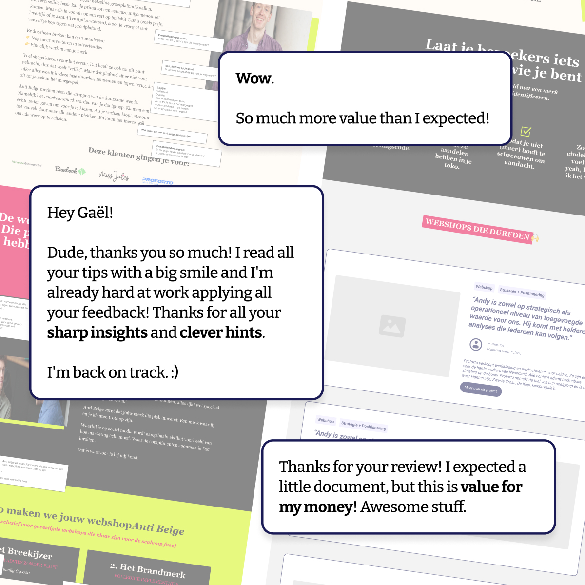

(one GPT, $9, no call, no waiting on me)
24-hour money back guarantee · instant access
For 4 years I've been writing website copy and building wireframes for creative consultants. Brand designers, coaches, small agencies. The work is hands-on. A 2-hour intake call, a full positioning sprint, copy, wireframes, the lot.
It works. But every project starts the same way. Someone sits in front of their own website, stares at it, and has no idea where to start. Not the copy. Not the design. The structure. What goes where. What each section should actually say.
"They didn't need me yet. They needed the outline first."
So I built a GPT that does the first step of my process. The part where I map out a homepage, header to footer, section by section. What goes where and why. No copy yet. Just the bones.
Think of it as a website strategist that interviews you, identifies your positioning, and designs the structure of your homepage in about 10 minutes.
A creative consultant doesn't need another audit. They need a plan they can look at and say: "Now I know what to build."
That's what this GPT does. You answer a few questions about your business, your clients, and your offer. In 10 minutes, it gives you a full homepage outline. Section by section. What each block should say, in what order, and why it's there.
If the outline clicks and you want someone to write the actual copy? That's where I come in. But the outline stands on its own.
You've tried to fix it yourself. You've looked at competitors. You've sat in front of a blank page and written three versions of your hero section that all sound the same. Here's where that gets you:
Most website advice tells you to "just write like you talk." That's like telling someone who can't cook to "just use fresh ingredients." It's not wrong. It's useless without a recipe.
The recipe is the structure. Once you know what goes where and why, writing it gets 10x easier.
24-hour money back guarantee · instant access
LinkedIn post, DM, referral. You land here.
$9 GPT builds you a custom homepage outline in 10 minutes.
Use the outline yourself, hand it to a designer, or hire me to write the copy.
No calls to book. No audits to sit through. No "let's hop on a quick Zoom."
24-hour money back guarantee
Answer a few questions about your business, your clients, and what you sell. In under 10 minutes, the GPT produces a custom homepage outline built around your positioning, not a template.
Custom-built for: Brand designer, 3 years in, serves startups and scale-ups, €3-5k projects
Generated from your inputs. Every section is specific to your business, your clients, and how you work.
Lead with the client's problem, not your title. Instead of "Brand Designer based in Amsterdam," open with what changes for the client when they hire you. Example direction: "Your brand should close deals before you open your mouth."
One line that says who you help and what they get. Follow with 2-3 proof points: client names, results, or a short "I helped [type] go from [before] to [after]."
Don't list deliverables. List decisions you make for them. "Logo design" means nothing. "A visual identity that makes your pitch deck land" means something.
Open your current homepage next to this outline. Section by section, check what matches and what doesn't. The gaps are your rewrite list.
| # | Section | What it does |
|---|---|---|
| 01 | Your Positioning Line | The one sentence that tells visitors what you do and for whom. Extracted from your answers, not a template. |
| 02 | Hero + Above the Fold | What your homepage should open with. The structure, the order, and why. |
| 03 | Proof + Trust Section | Where to put testimonials, client names, results. How to structure social proof so it does actual work. |
| 04 | Services / Offer Section | How to present what you sell without listing deliverables nobody cares about. |
| 05 | CTA + Footer Structure | Where to put your call-to-action, what it should say, and how to close the page. |
A one-page checklist you run after the outline is done. Checks your copy for the 7 things that make creative consultant websites forgettable. Print it, check the boxes, fix what's off.
Two real homepage outlines from past projects (anonymised). See what the structure looked like before positioning and after. So you know what "good" looks like.
Once you have your outline, these prompts help you write each section. One prompt per section. Paste it into ChatGPT or Claude with your outline and get a rough first draft.
All of the above, for $9.
Yes, nine. That's the whole point.
24-hour money back guarantee · instant access
"Your energy and writing style gave me a real boost."
"OMG. This fixed 6 months of me fumbling with my copy."
"You asked the right questions, now everyone knows what I do."

Website strategist · Copy + wireframes for creative consultants
I spent 8 years in corporate jobs playing ping pong with agendas that had no point. Then I left to write websites for people who actually make things.
For 4 years I've done website positioning for brand designers, creative consultants, and small agencies. The ones doing great work but whose website doesn't say that.
I built this GPT on the same process I use in my 2-week sprints. Same questions. Same structure. Same thinking. Just without me on the other side of the screen.
24-hour money back guarantee · instant access
A custom GPT that asks you questions about your business, your clients, and your offer. Then it builds a homepage outline, header to footer, section by section. In about 10 minutes.
Yes. It's a GPT trained on my process from 25+ real website positioning projects. It asks the same questions I ask in my intake sessions.
No. It gives you the structure. What goes where, in what order, and why. The copy is the next step. You can write it yourself, use the included writing prompts, or hire me to do it.
Yes. This is built specifically for creative consultants: brand designers, design agencies, coaches, developers. If you sell a creative service and your website doesn't match the quality of your work, this is for you.
Good. Open your current site next to the outline. The gaps between what you have and what the GPT recommends are your rewrite list.
24-hour money back guarantee. If it doesn't land, email me and I'll refund you. No questions.
Up to you. You can use it yourself, hand it to a designer or developer, or hire me for a copy pass or full positioning sprint.
24-hour money back guarantee · instant access
$9 once · custom outline for your business · 24-hour money back guarantee
Get a custom homepage outline built for your creative business in the next 10 minutes.
Get instant access